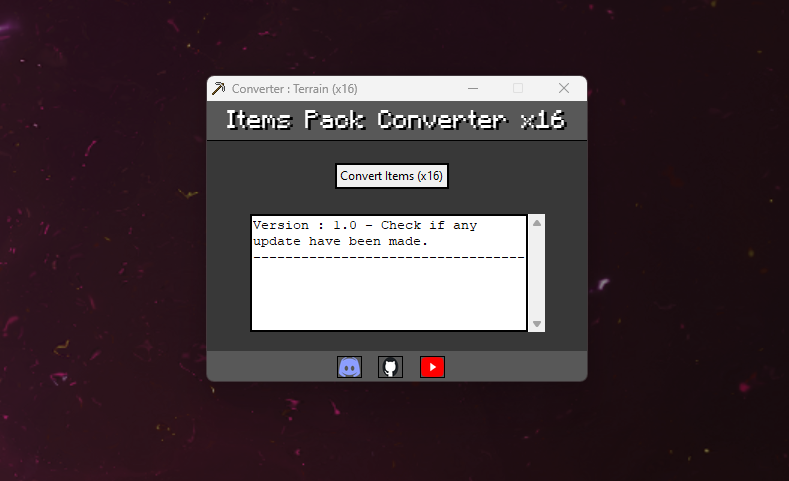
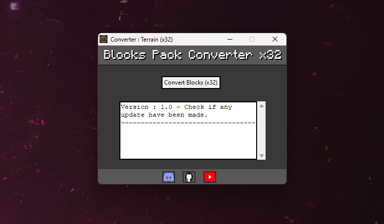

Java to LCE Texture Pack Converter
Presentation
This software converts blocks(x16/x32) and items(x16) from texture packs from the Java version to the WiiU version


Download
Download (original link)Download (link1)
Download (link2)
This software converts blocks(x16/x32) and items(x16) from texture packs from the Java version to the WiiU version